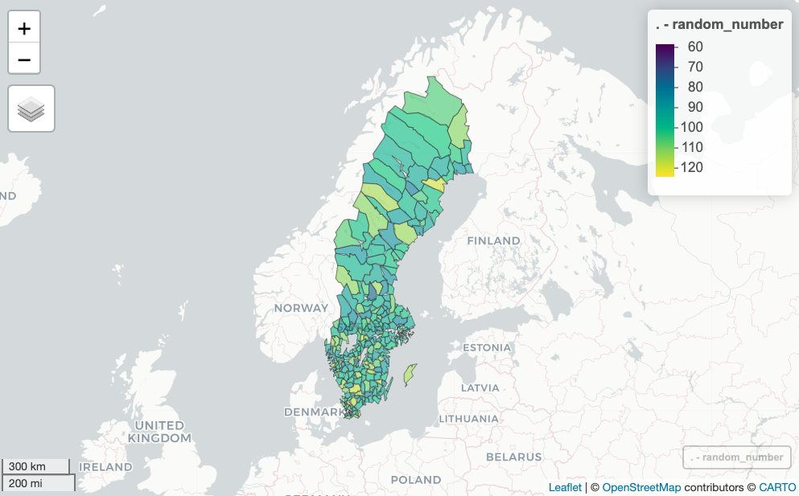
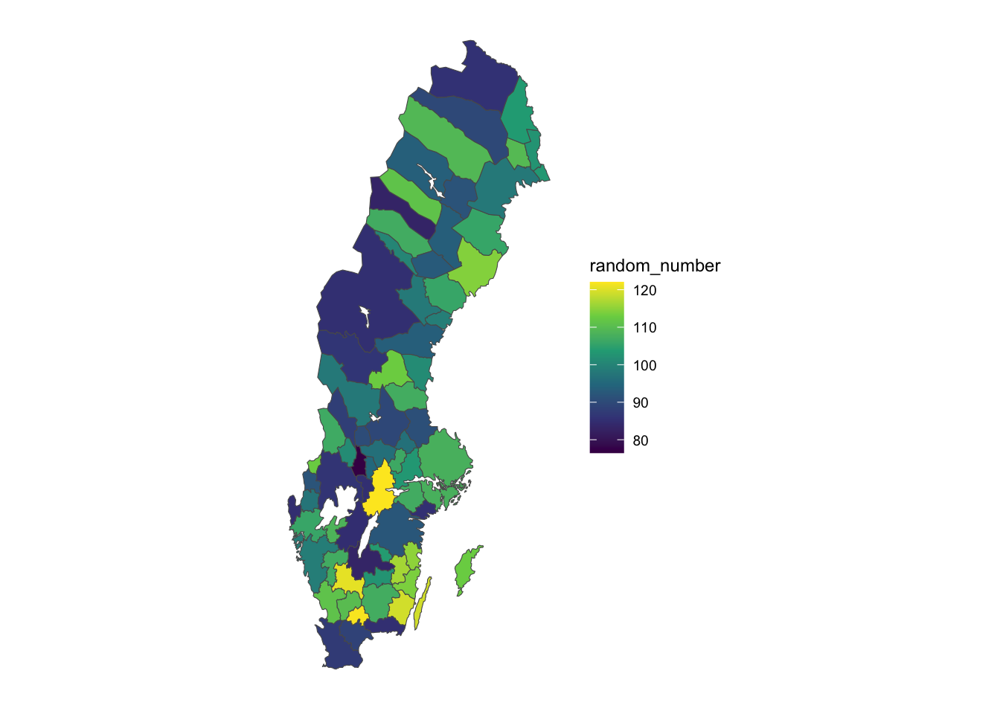
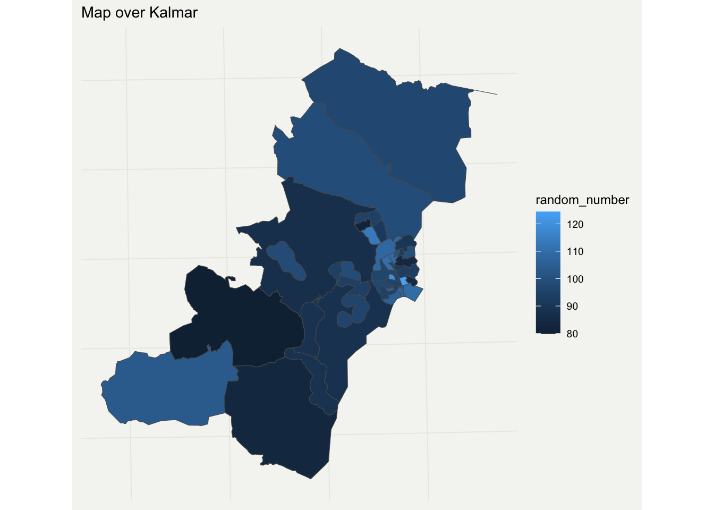
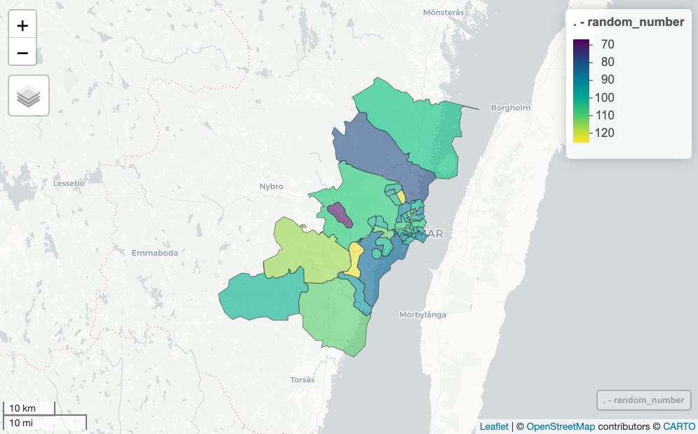

The swemaps2 package provide map objects to easily make beautiful maps of Sweden in R.

This is the successor of swemaps by reinholdsson
Installation
You can install the package from github:
remotes::install_github("filipwastberg/swemaps2")Country maps
swemaps2 contain simple features (sf) objects that make it easy to create maps over Sweden.
You can use these basic sf-objects to combine with data from SCB (using the pxweb package).
county
#> Simple feature collection with 21 features and 2 fields
#> Geometry type: MULTIPOLYGON
#> Dimension: XY
#> Bounding box: xmin: 277247.6 ymin: 6133891 xmax: 917271.4 ymax: 7669870
#> Projected CRS: SWEREF99 TM
#> # A tibble: 21 × 3
#> ln_kod ln_namn geometry
#> <chr> <chr> <MULTIPOLYGON [m]>
#> 1 01 Stockholms (((627791.9 6569168, 630226.6 6572122, 631290.7 6570364…
#> 2 03 Uppsala (((633496.1 6610607, 632895.2 6609547, 637045.2 6601261…
#> 3 04 Södermanlands (((555102.6 6536546, 549484.9 6540210, 548399.8 6543139…
#> 4 05 Östergötlands (((496094.6 6443310, 493792.5 6438720, 485582.7 6436950…
#> 5 06 Jönköpings (((498999.7 6421417, 500271.5 6417129, 504533.5 6412062…
#> 6 07 Kronobergs (((504095.5 6338410, 505156.2 6340178, 509340.4 6339948…
#> 7 08 Kalmar (((544656.8 6325506, 540241.9 6327303, 537963 6332166, …
#> 8 09 Gotlands (((706606.9 6415775, 709951.4 6417040, 712659 6417968, …
#> 9 10 Blekinge (((473443 6228381, 472071.2 6231138, 468594.2 6230492, …
#> 10 12 Skåne (((420135.8 6254456, 425339.2 6256685, 430337.3 6256572…
#> # … with 11 more rowsUsing these objects it is easy to use ggplot to create beautiful maps for counties (Län) and municipality (Kommun):
library(swemaps2)
library(tidyverse)
library(ggthemes)
county %>%
mutate(random_number = rnorm(nrow(.), mean = 100, sd = 10) ) %>%
ggplot(aes(fill = random_number)) +
geom_sf() +
scale_fill_viridis_c() +
theme_swemap2()
Municipality (kommun):
municipality %>%
mutate(random_number = rnorm(nrow(.), mean = 100, sd = 10) ) %>%
ggplot(aes(fill = random_number)) +
geom_sf() +
scale_fill_viridis_c() +
theme_swemap2()
Using a package like leaflet or mapview you can create interactive maps:
library(mapview)
municipality %>%
mutate(random_number = rnorm(nrow(.), mean = 100, sd = 10)) %>%
mapView(zcol = "random_number")
The regional FA Region maps are also included:
fa_region %>%
mutate(random_number = rnorm(nrow(.), mean = 100, sd = 10) ) %>%
ggplot(aes(fill = random_number)) +
geom_sf() +
scale_fill_viridis_c() +
theme_swemap()
DeSO and RegSO
Statistics Sweden has two demographic maps that you can load using the load_deso() and load_regso() functions. These objects are big and works best if you first filter them.
deso <- load_deso()
#> Reading layer `DeSO_2018_v2' from data source
#> `/private/var/folders/pn/9hhpnpd15_d2k3qp5k814nnh0000gq/T/RtmpVhEYFa/deso_2018_2021-10-21/DeSO_2018_v2.gpkg'
#> using driver `GPKG'
#> Simple feature collection with 5984 features and 7 fields
#> Geometry type: POLYGON
#> Dimension: XY
#> Bounding box: xmin: 266646.3 ymin: 6132476 xmax: 920877.4 ymax: 7671055
#> Projected CRS: SWEREF99 TM
deso %>%
filter(kommunnamn == "Kalmar") %>%
mutate(random_number = rnorm(nrow(.), mean = 100, sd = 10)) %>%
ggplot(aes(fill = random_number)) +
geom_sf() +
labs(
title = "Map over Kalmar"
) +
theme_swemap2()
deso %>%
filter(kommunnamn == "Kalmar") %>%
mutate(random_number = round(rnorm(nrow(.), mean = 100, sd = 10), 0)) %>%
mapView(zcol = "random_number")
City maps
Stockholm
In addition there are maps for the three largest Swedish cities Stockholm, Göteborg and Malmö.
The Stockholm map, for example, also has some additional population data:
ggplot(sthlm, aes(fill = kvinnor_45)) +
geom_sf() +
scale_fill_viridis_c() +
labs(
title = "Stockholm women 45",
caption = "Source: https://dataportalen.stockholm.se"
) +
theme_swemap2()Göteborg
Gothenburg has the largest map:
ggplot(gbg, aes(fill = area_km2)) +
geom_sf() +
scale_fill_viridis_c() +
theme_swemap2() +
labs(
title = "Gothenburg by area size",
caption = "Source: http://statistikdatabas.goteborg.se/pxweb/sv/"
)
Malmö
ggplot(malmo, aes(fill = area)) +
geom_sf() +
scale_fill_viridis_c(labels = scales::number) +
theme_swemap2() +
labs(
title = "Malmö by area size",
caption = "Source: https://malmo.dataplatform.se/"
)